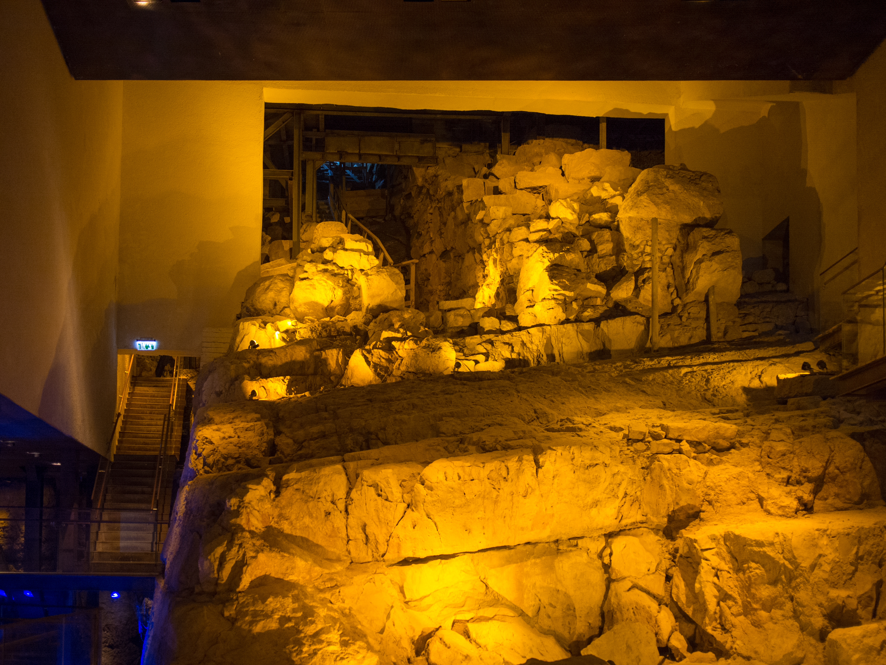

Gihon Spring and Warren's Shaft System

Jerusalem's only perennial spring and the rock-cut water system that let the city reach it from inside its defences. The intermittent Gihon rises in the Kidron Valley at the foot of the City of David ridge. Middle Bronze Age fortifications (c. 18th century BC) guarded it: a tower around the spring itself, a tower over a rock-cut pool, and a protected passage. Charles Warren in 1867 found a sloping tunnel leading to a 13-14 m vertical shaft above spring water. Later work showed the shaft is a natural fissure, breached when an 8th-century BC deepening of the tunnel cut into it, and that the original system bypassed it to reach the pool. This entry covers the spring and the pre-Hezekian system only; Hezekiah's Tunnel and the Pool of Siloam have their own entries.
Interpretations
The spring, its Middle Bronze Age fortifications and the tunnel system are secure. The older reading — that Joab climbed Warren's Shaft to capture Jebusite Jerusalem (2 Samuel 5:8, 'water shaft') — is now doubted: the shaft is a natural fissure that was not reachable in the system's earliest phase, and the Hebrew word tsinnor may mean a water channel generally. The entry therefore does not claim Warren's Shaft as Joab's route; the Davidic capture link is presented as the traditional reading, revised by the Reich-Shukron excavations.
Scripture Illuminated
Biblical Significance
Gihon is where kings were made: Solomon was anointed king at Gihon (1 Kings 1:33-39), and Hezekiah later stopped its upper outflow to starve an Assyrian siege of water (2 Chronicles 32:30). The spring explains why Jerusalem stands where it does at all — a hill city is only defensible if it can drink under siege — and its towers and tunnels are that survival logic cut into rock.